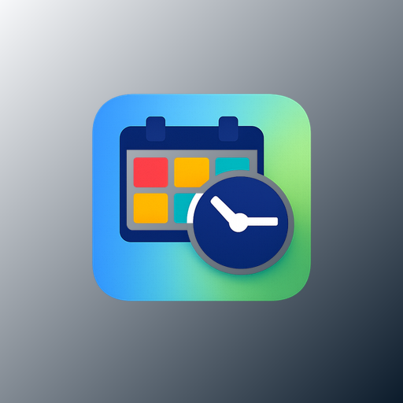
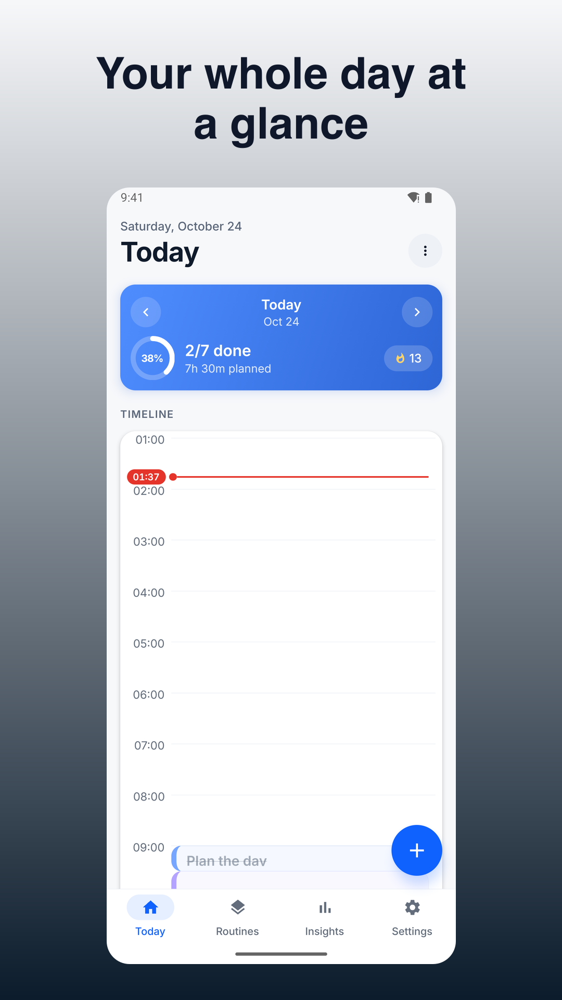
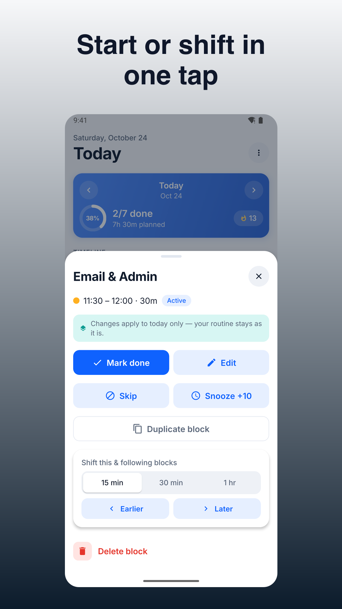
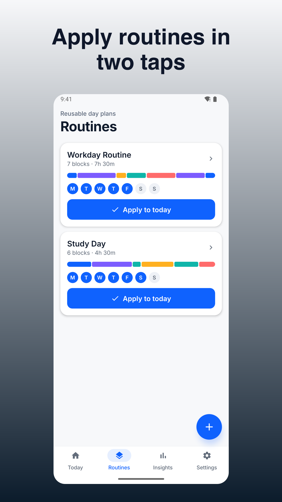
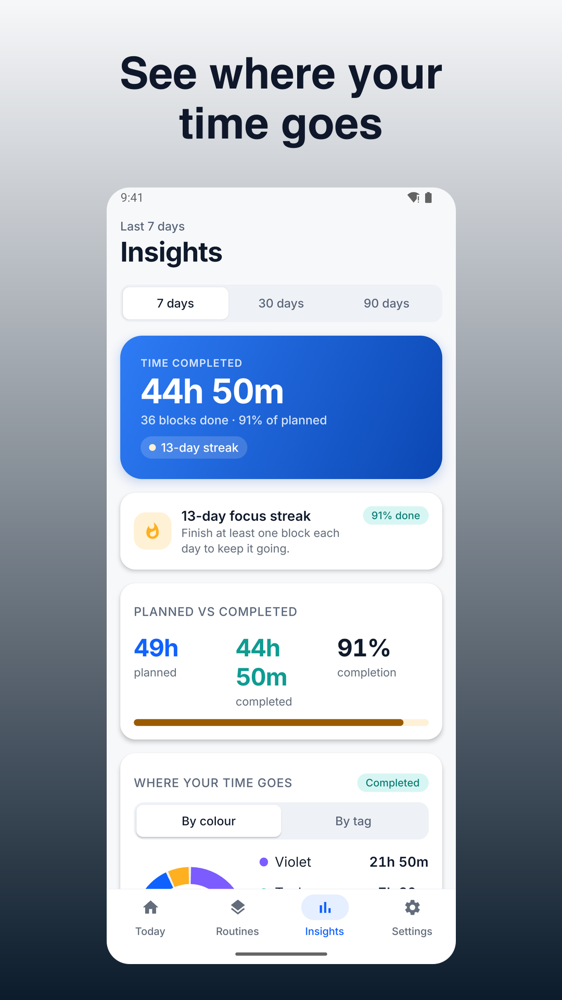
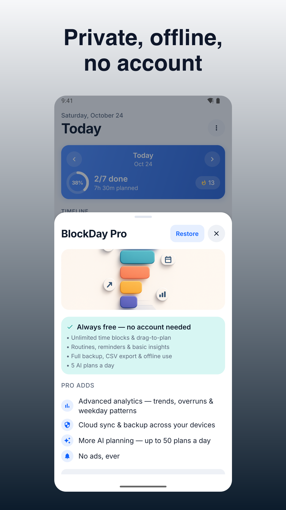

BlockDay - Time Blocking
Fast time blocking with a simple time block planner. Offline, no account.





Time blocking made instant with BlockDay: drag to plan your day in seconds, stay on track with clear alerts, and keep your data on your device by default. It’s a focused time block planner built for people who want a tactile daily flow without sign-ups or clutter.
Why BlockDay
- Plan within 60 seconds of first launch—no account required
- Works offline; your schedule, templates, and stats live on your device
- Reliable reminders with snooze/skip and an always-visible Active Block banner
- Fast edits for real life: resize, move, duplicate, rubber-band shift, and gap-fill
- Privacy-first design with optional encrypted cloud sync you control
Core workflow
- Drag on a vertical 24h timeline to create blocks with minute precision (snap to 5/10/15)
- Stretch to resize, drag to move; supports overnight blocks
- Color-code activities and add tags for visual clarity and insights
- Tap Start/Done on blocks; see a now/next banner with time left
Key features
• Day Timeline: natural, tactile editing; live snapping, ghost preview, overlap handling
• Color-coded Activities & Tags: accessible presets + custom hues; multiple tags per block
• Reminders & Alarms: on-time local notifications, pre-alert nudges, snooze 5/10/15/30, skip, persistent banner
• Templates/Routines: save block sets (durations, colors, tags, nudges), weekday/weekend selectors, stack without overwriting
• Fast Editing Tools: duplicate, multi-select move, rubber-band shift, gap-fill drag, default durations, context menu
• Undo/Redo & Log: unlimited per session; confirmations for destructive actions; exportable activity log
• Statistics/Insights: time by color/tag, planned vs completed, streaks, daily/weekly summaries
• Export/Share: day/week to PNG and CSV; manual local backup/restore file
• ADHD-friendly Cues: active banner, pre-transition ramp, optional full-screen alert
• Themes & Dark Mode: system-following with high contrast and large text option
• Optional Calendar Integration: connect selected device calendars with conflict choices (keep, shift, skip)
• Optional AI Plan Helper: paste a task list to draft a day plan; review and insert selected blocks
What’s free
- Core time blocking: create, move, resize, duplicate, multi-select
- Templates and routines (create/apply/stack)
- Reminders, pre-end nudges, Active Block banner, optional full-screen alert
- Insights basics: distribution by color/tag, planned vs done, streaks
- Manual backup/restore, PNG/CSV export
- Dark mode, large text, undo/redo
- Optional minimal ads (never during an active block)
What Pro adds (one-time or subscription options)
- Advanced analytics: trends over 7/30/90 days, overrun rates, weekday patterns; export insights CSV
- Customizable widgets and theme packs
- Higher quota for AI Plan Helper
- Optional cross-device cloud sync and two-way calendar integration (monthly/annual with trial; cancel anytime)
Privacy & control
- Offline-first: data stored on your device by default
- Optional login only for cloud sync (email code; no passwords)
- Minimal, toggleable analytics; no trackers in Pro
- Exports available; backups stay where you save them
Accessibility
- Large touch targets, Dynamic Type, high-contrast themes
- VoiceOver/TalkBack labels for timeline and actions
Built for focus, speed, and trust. If you want a time blocking app that respects your flow and your privacy, try BlockDay today.
Support: jeets98e@gmail.com